Two picks left: the village cobble (A / B / C) and your sign-off on the stone-ledge treatment (the Dellhollow section). Everything else is decided and live.
Applied to the live world this round (your round-2 decisions):
· Forest floor/path = B — unchanged, still live.
· Dellhollow WATER = candidate B — now live as tex-water; the faint quadrant seam from the tileable pass was healed (gradient-domain), and the stray warm reflection toned down.
· Dellhollow DECK = candidate C's finish, darkened ~10% value + lightly desaturated per your "a bit too bright" note — now live as tex-deck.
· Interior PLANK = candidate C — now live as tex-plank; all three interiors (bakery, lake cottage, keeper's) switched off the legacy f-plank. Candidate A is registered as g-plank-bright (available for future bright rooms, no scene uses it yet).
· NEW — stone-LEDGE (masonry) platform class: constructed cut-stone quay / lock walls now meet water with a HARD boundary and an auto stone FACE dropping to the waterline (no stilts, no water underneath, no blend) — see the Dellhollow section. Applied live in Lock Five. Natural rock (g-cliff) still keeps its soft edge.
Candidate B (soft-painterly, muted olive & warm umber) is live as tex-forestfloor / tex-forestpath. No change this round.
B · LIVE
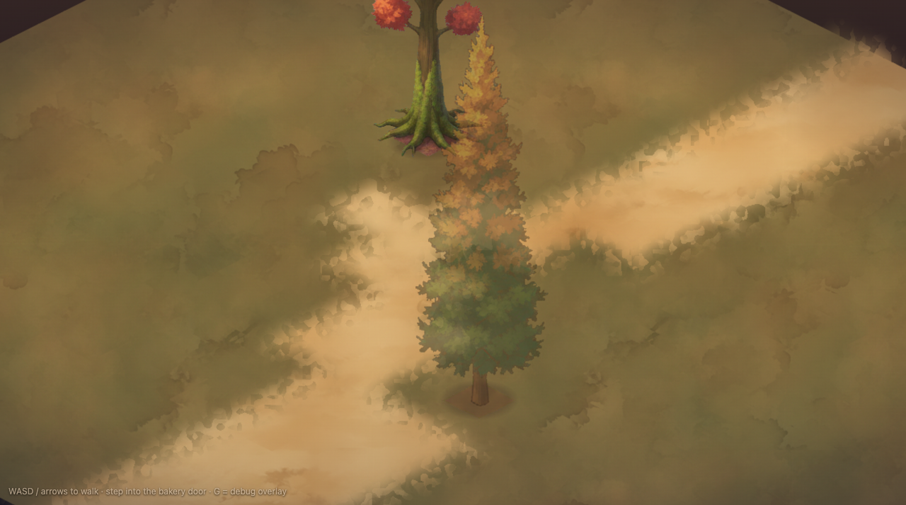
candidate B — live
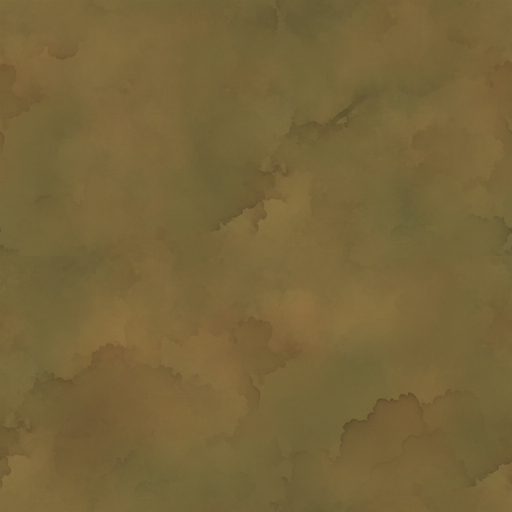
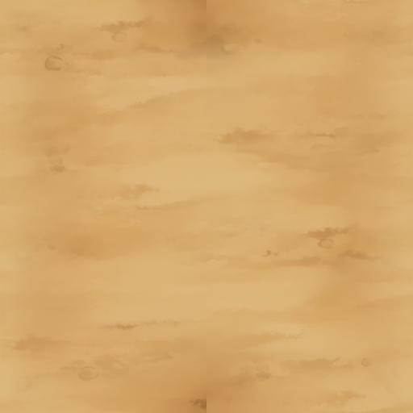
floor · path
Soft-painterly, low-frequency mottling, no discrete leaves. This palette is now the seed for the village grass below.
VILLAGE — cobble, re-rendered on the unified forest base PICK ONE
Per your "the town is built on the same ground as the forest": the base is now unified with the forest — grass derived from the forest-B palette (a green push off the same soft-painterly floor) and the dirt/sand is literally tex-forestpath (same file as the forest). All three cobbles are re-rolled at an honest ~0.2 m sett (round 2 rendered them chainmail-tiny — patternScale corrected per candidate) and sampled through the iso sampler so the courses run along the grid. Grass corner + dirt corner for sibling context; stall + barrel for scale. Pick one cobble.
A
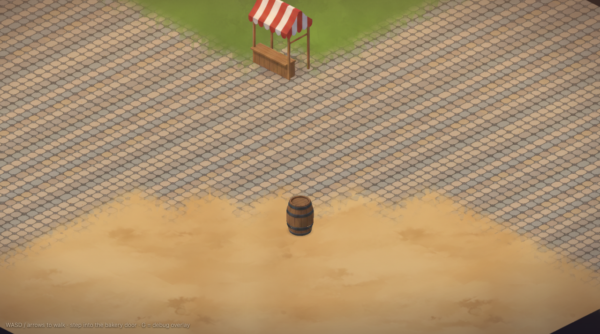
A — rounded warm cobbles, honest ~0.2 m
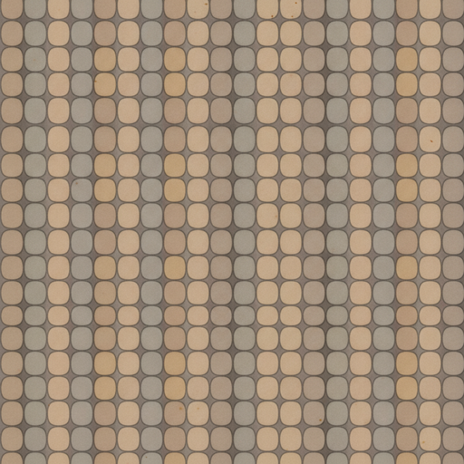
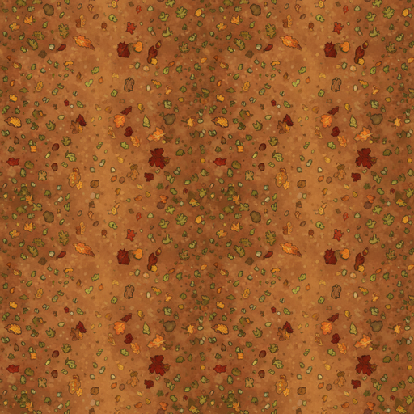
cobble · grass · dirt
Small rounded cobbles, soft greige / warm taupe, tidy courses. Reads biggest / calmest of the three.
B
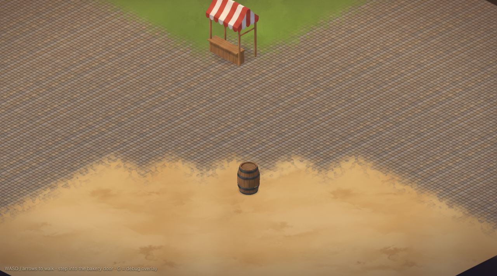
B — tight squarish setts
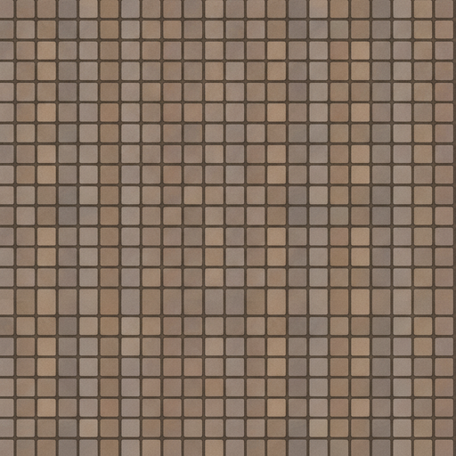
cobble · grass · dirt
Small squarish setts in even courses, warm grey-brown, faint mortar seams. Busiest read.
DELLHOLLOW — now-live water + deck, and the new STONE LEDGE SIGN OFF THE LEDGE
Top row: the now-live Dellhollow materials on the clean deck demo — healed water-B, darkened deck-C pier (fascia + stilts, water under the lip), and the natural cliff (which correctly keeps its soft edge — it is natural gorge rock, not construction).
Bottom row is the design catch you flagged: CONSTRUCTED stone must NOT dissolve into water like a beach. The new g-ledge masonry class gives a hard boundary and a dressed cut-stone wall face (matching the lock-wall assets) dropping to the waterline — no stilts, no water underneath, no blend. Compare it against the old soft blend. It is live now in Lock Five. Sign off the ledge treatment (or tell me to adjust wall height / stone tone).
LIVE
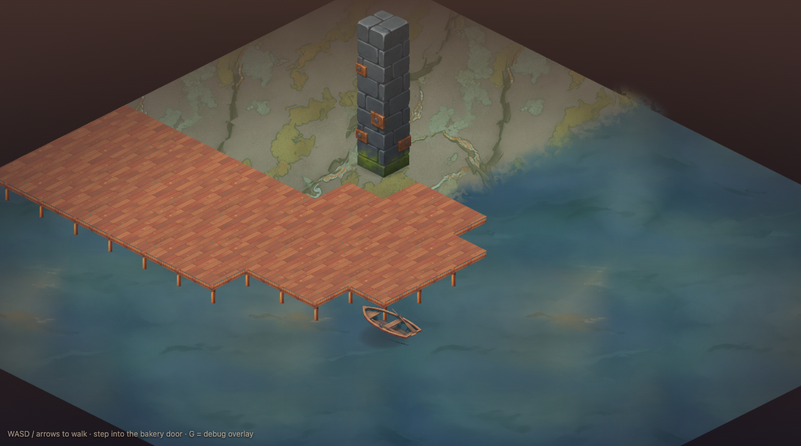
now live — water-B (healed) · deck-C (darkened pier) · natural cliff (soft edge, correct)
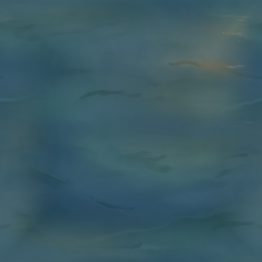
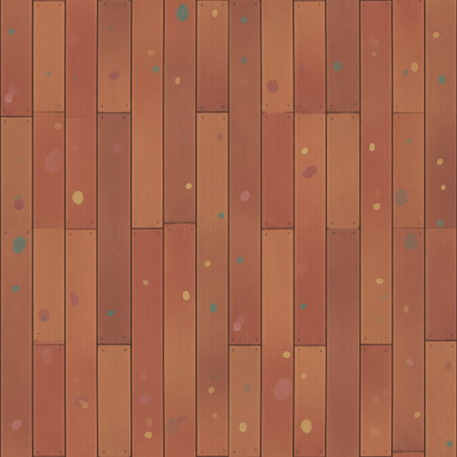
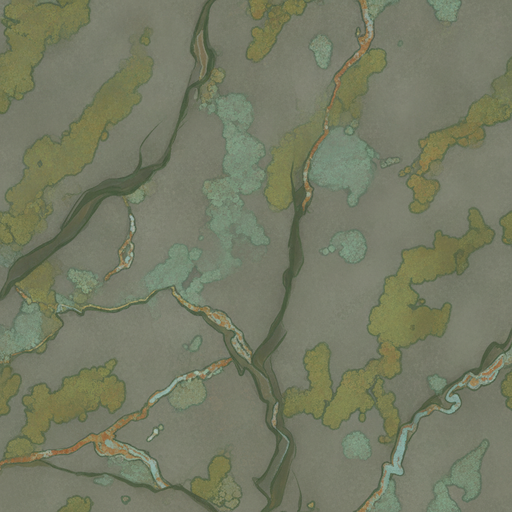
water · deck · cliff
Deck-C darkened ~10% value + lightly desaturated — warm and grounded, no longer hot. Water calm and seamless.
LEDGE
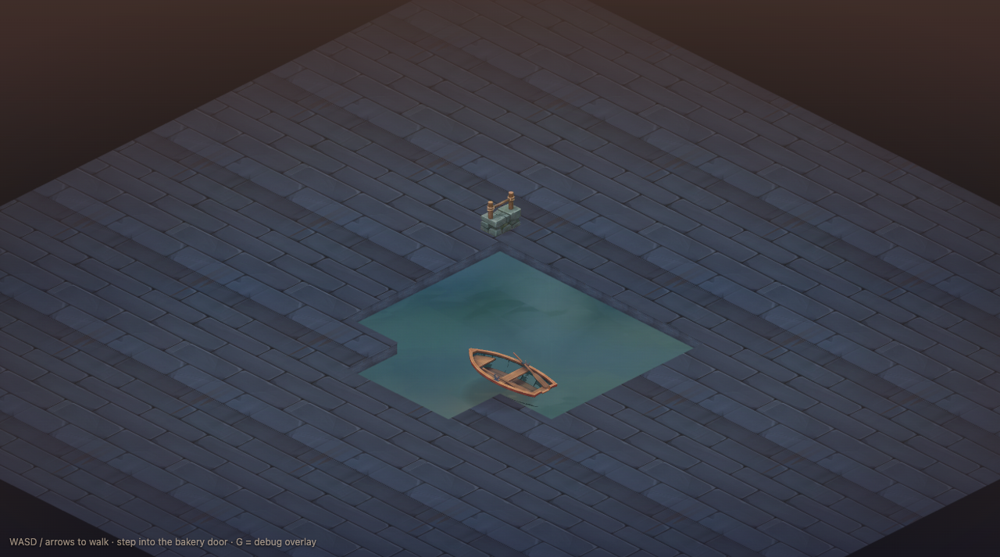
NEW — hard masonry ledge: cut-stone wall face to the waterline, no beach
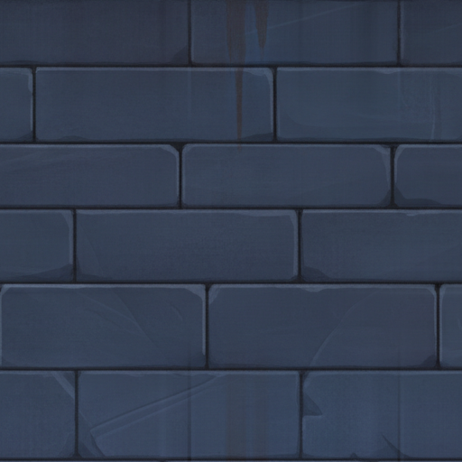
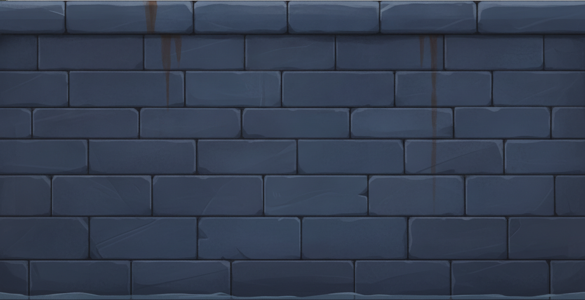
top · face
Dressed dark ashlar top + auto stone face on the south/east water edges. Used live in Lock Five (the lock-chamber margin).
OLD
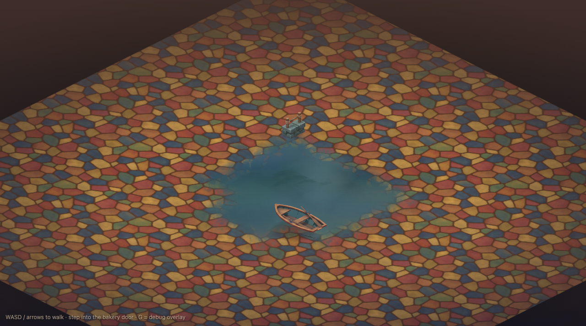
the wrong look — stone soft-dissolving into water like a beach
The old behavior: a soft feathered boundary. Fine for natural rock, wrong for constructed stone. This is what the ledge replaces.
INTERIOR — plank DECIDED · C live
Candidate C is live as tex-plank across all three interiors (coherent with the furniture). Candidate A is registered as the g-plank-bright alternate for future bright rooms (no scene uses it yet). Rendered iso-aware at honest board width.
C · LIVE
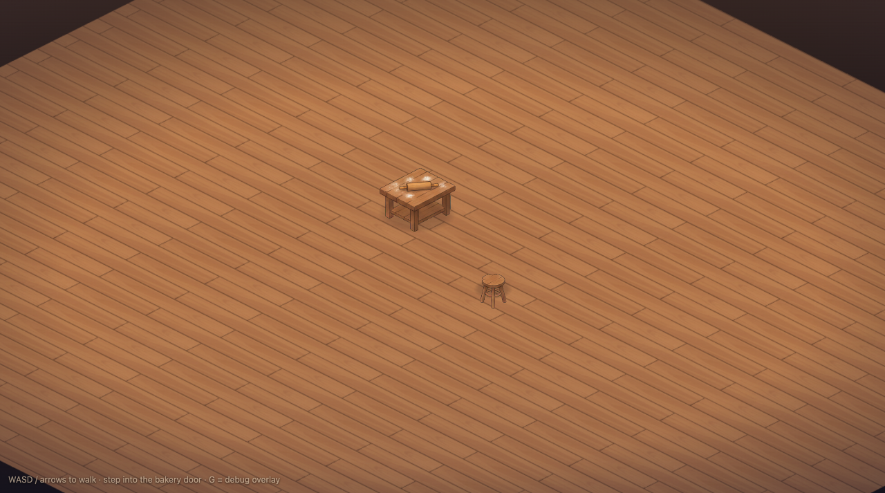
candidate C — live default
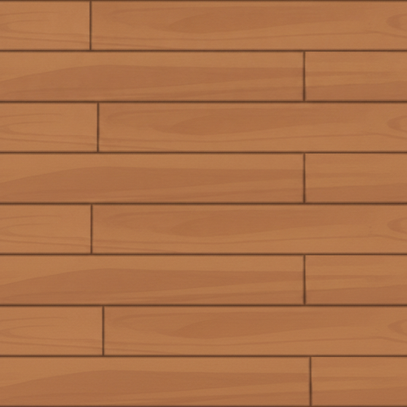
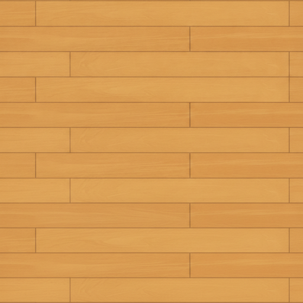
C live · A alt
Wider warm toasted-brown boards, clean simplified grain. A (honey-oak) is kept on the shelf as plank-bright.
")